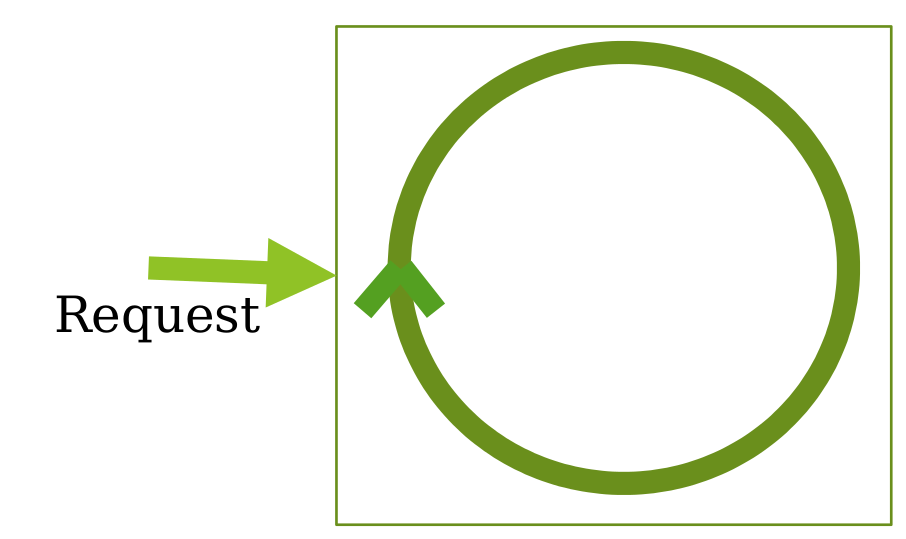
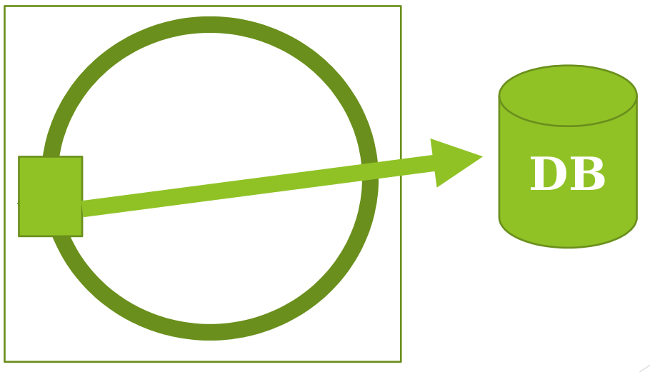
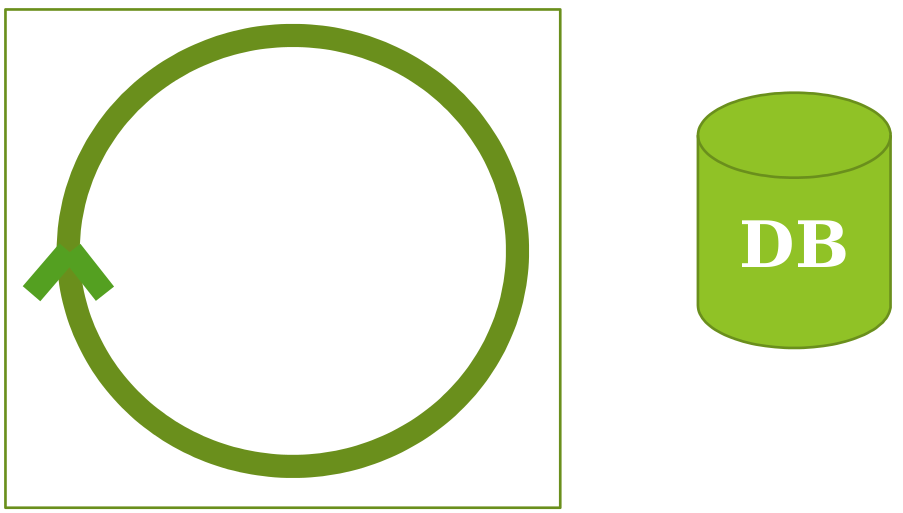
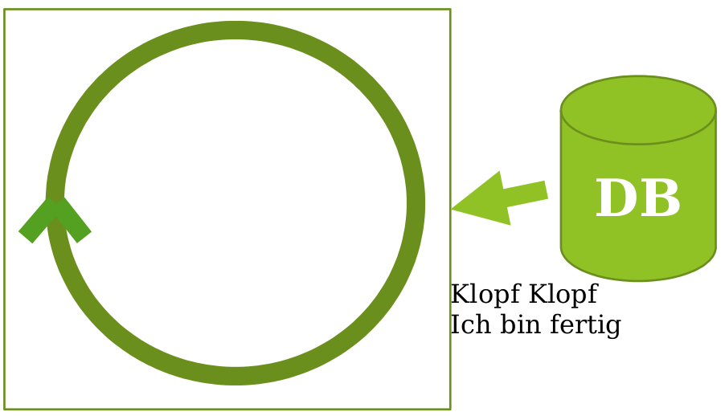
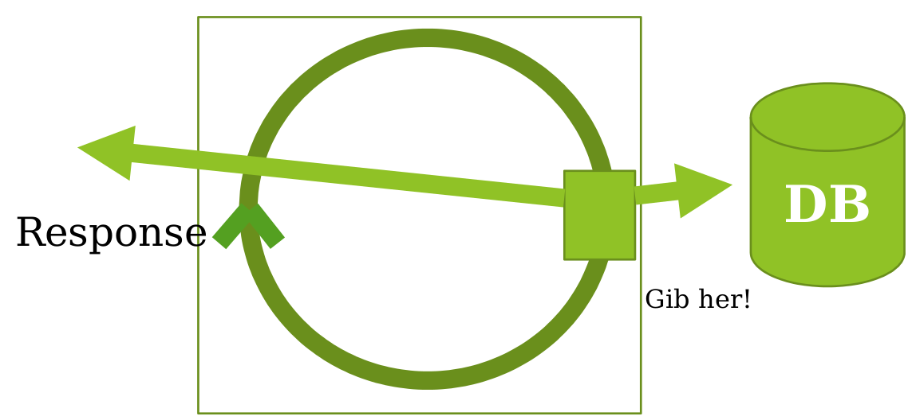

Inhalt
- Was ist Nodejs?
- Why should I node?
- Traditionelles vs. Non-blocking I/O
- Getting started
Was ist NodeJS
Ein Framework, KEIN Webserver
- Framework für serverseitiges JavaScript
- Entwickelt von Ryan Dahl 2009 (Mittlerweile Joyent Inc.)
- Google V8 Engine
- Ausgelegt für viel I/O
- Asynchron
serverseitiges JavaScript?????
Why should I Node?
Verarbeitung von Requests
- Prozessmodell (Apache 1.x)
- Threadmodell (Apache 2.x)
- Event-Driven Architecture (NodeJS und Nginx)
Event-Loop
Event-Loop
Event-Loop
Event-Loop
Event-Loop
Callbacks
- Funktionen sind Objekte
- Sie können als Parameter einer anderen Funktion übergeben werden.
- Funktion zur Auswertung wird direkt mitgegeben
- Verhindern das blockieren von Programmen
- Wir haben schon Callbacks verwendet: onreadystatechange() oder onload()
Traditionelles I/O
ar db_result = db.query(“select * from table“);
doSomething(db_result); //wait!
doSomeOtherVoodoo();
//blocked
Non-blocking I/O
db.query(“select * from table“,function(db_result)
{
doSomething(db_result); //wait
});
doSomeOtherVoodoo();
Getting started
NodeJS Download
- Aktuelle Version (zum Downloaden): 6.2.0
- https://nodejs.org/en/download/
- Windows Installer / Binaries
- Mac OS X Installer / Binaries
- Linux Binaries (.tar .gz)
- Sourcecodes zum selber kompilieren (Abhängig von Python 2.6/2.7)
NIEMALS NIEMALS NIEMALS NIEMALS NIEMALS NIEMALS NIEMALS NIEMALS NIEMALS NIEMALS NIEMALS
Ich meine es ernst ... NIEMALS NIEMALS NIEMALS NIEMALS NIEMALS NIEMALS NIEMALS NIEMALS!!!!!!111EINSELF
NIEMALS Unter Linux NodeJS mit 'sudo apt-get install' installieren
FU Debian Mantainers!!!!!!!!!!!!!!Man erhält NodeJS Version 0.10.x
Besser: https://nodejs.org/en/download/package-manager/
NodeJS Download
- Das Framework NodeJS 6.2.0
- NPM Packetmanager
NPM (NodePaketManager)
- Paketmanager für Node.js
- Abhängige Module können in einem JSON File definiert werden: package.json
npm i(nstall) -g 'packetName' --save
# -g: das Paket wird global installiert
# --save: Das Paket taucht als Dependencie in packet.json auf
const http = require('http');
const hostname = '127.0.0.1';
const port = 3000;
const server = http.createServer((req, res) => {
res.statusCode = 200;
res.setHeader('Content-Type', 'text/plain');
res.end('Hello World\n');
});
server.listen(port, hostname, () => {
console.log(`Server running at http://${hostname}:${port}/`);
});
Wichtige Links
- http://nodejs.org/download/ (Node.js Homepage)
- https://www.joyent.com/noderoad (next Steps Node.js)
- http://nodeschool.io/ (Tutorials)
- https://www.npmjs.org (Node packaged Modul – Packed Manager)